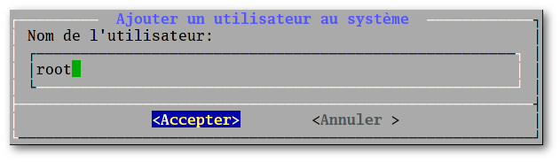
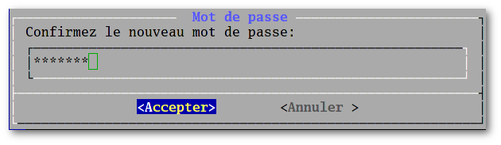

Nouvelles | Information | Documentation | Installation | Paquets | FAQ |
Téléchargements | Forum | Code | Captures d'écrans | Fonds d'écrans |
|
|
|
ForumSat Jul 1 17:50:49 2017 UTC INSTALLER: Un paquettnut  Re : Recette uClibc-ng (gelée) Re : Recette uClibc-ng (gelée)Fri Jun 30 21:42:58 2017 UTC INSTALLER: Un paquetModelor Recette musl-libcFri Jun 30 20:51:32 2017 UTC INSTALLER: Un paquetModelor Re : Recette uClibc-ng (gelée)Fri Jun 30 20:44:04 2017 UTC Généralitées: NewsModelor Re : Nouvelle iso avec mode LIVE disponibleThu Jun 29 06:03:45 2017 UTC CONFIGURER: Le sontnut  Re : Pas de son, groupe audio absent Re : Pas de son, groupe audio absentWed Jun 28 14:51:32 2017 UTC CONFIGURER: Le sonRocket Pas de son, groupe audio absentTue Jun 27 14:01:19 2017 UTC INSTALLER: Un paquetRocket Re : Re : Problème de dépendanceTue Jun 27 10:57:23 2017 UTC INSTALLER: Un paquettnut Re : Problème de dépendanceMon Jun 26 21:04:29 2017 UTC INSTALLER: Un paquetRocket Re : Problème de dépendanceMon Jun 26 08:08:47 2017 UTC INSTALLER: Un paquetSipoMatadorduCosmos Re : Problème de dépendance |
Fri May 19 18:42:23 2017 UTC Foire aux questionsSommaire
Comment s'inscrire sur la liste de diffusionCela se fait en plusieurs étapes :
Les archives des listes de diffusions sont disponibles à l'adresse: https://listengine.tuxfamily.org/nutyx.org/ NuTyX n'est pas une multi-libLa mise en oeuvre d'une distribution multilib demande beaucoup plus de travail. Normalement toutes les librairies doivent être compilées en 64 et en 32 bits. Actuellement, il n'est pas possible de produire une multi-lib puisque des liens sont créés lors de la construction / installation de NuTyX (lib64->lib) sous /lib et sous /usr. L'installateur installe NuTyX sur une seule partitionCette question nous a tellement été posée, je vais essayer d'apporter le plus d'arguments possible afin d'expliquer la raison. Aujourd'hui, un utilisateur utilise très souvent de grosses quantités de données, la taille du dossier personnel peut très très vite grossir: Les MP3, les photos, les vidéos sont souvent des fichiers très gourmants en espace disque. Imaginons que vous avez un disque dur de 250 Gbytes. Vous vous dîtes: OK je prends 100 G pour le système et 150 pour mes données. Super, vous venez de "découper" votre disque dur en 2 et la partition de données sera plus vite remplie que si vous aviez gardé une seule partition. Donc si on pouvait éviter de devoir découper son disque dur en partitions tout en pouvant s'assurer en cas de réinstallation de NuTyX de ne pas devoir "toucher" à la partition sur laquelle se trouve ses données personnelles, ce serait l'idéal. C'est exactement l'idée de l'installateur de NuTyX.
La construction des paquets dans une chroot. Quand et Pourquoi ?L'ISO de NuTyX installe un système de base ce qui offre à l'utilisateur le choix entre deux scénarios d'utilisation de la distribution: NuTyX peut être considérée comme une distribution dite "binaires"L'utilisateur installe ses applications préférées depuis le serveur distant.Une fois le système de base installé, l'utilisateur installe ses applications préférés comme expliqué dans la docummentation. Une installation typique ressemble à: get xorg lxdm xfce4 xfce4-extra firefox gvfs ntfs-3g transmission thunderbird Les paquets binaires étant divisés en paquet de base et sous paquets (devel, doc, man, etc), seul le paquet de base sera installé. Cela signifie que si l'utilisateur souhaite compiler des paquets non présents en binaire, il devra impérativement compiler ces paquets dans une chroot sinon la compilation échouera par manque de dépendances de development. NuTyX peut être considérée comme une distribution dite "sources"L'utilisateur compile ses applications préférées sur sa machine locale.Une fois le système de base installé, l' utilisateur installe les outils de développement: get cards.devel Il rapatrie les recettes disponibles: sudo ports -u Il ajuste le fichier de configuration /etc/cards.conf comme ceci: dir /usr/ports/kde5-extra dir /usr/ports/kde5 dir /usr/ports/gnome-extra dir /usr/ports/gnome dir /usr/ports/mate-extra dir /usr/ports/mate dir /usr/ports/xfce4-extra dir /usr/ports/xfce4 dir /usr/ports/gui-extra dir /usr/ports/gui dir /usr/ports/cli-extra dir /usr/ports/base base /usr/ports/base logdir /var/log/pkgbuildEt peut maintenant compiler ses paquets sans devoir être dans une chroot. Pour compiler le server graphique xorg par exemple: sudo cards depcreate xorg Est-il possible de mettre à jour sa NuTyX (plus ancienne que la 9.0) vers NuTyX 9.X sans devoir tout réinstaller ?Il n'est pas possible de mettre à jour une ancienne version de NuTyX (plus ancienne que la version 9.0) vers NuTyX 9.X, le nombre de changements est trop important. Il faut savoir aussi que tous les paquets sont à chaque mise à jour majeur recompiler sur une nouvelle chaîne de compilation glibc+gcc+binutis, cela permet d'avoir un système cohérent et très robuste. Comme expliqué plus haut, il suffit d'effacer la NuTyX actuelle, le dossier /home et tous vos MP3 qui se trouvent dans /MP3 (par exemple) restent intacts, ensuite vous installez directement la NuTyX 9.X sur la même partition. Comment activer le compte root ?Par défaut, NuTyX n'active pas le compte root, si vous souhaitez compilez vos propres paquets, il est plus simple d'activer le compte root. C'est très simple, tapez: nuet choisissez root comme utilisateur  choisissez un nouveau mot de passe
et confirmez le nouveau mot de passe  et c'est tout. |